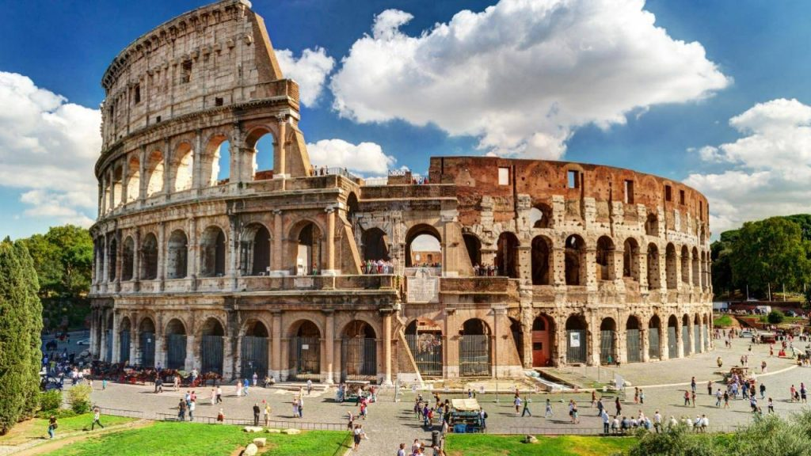
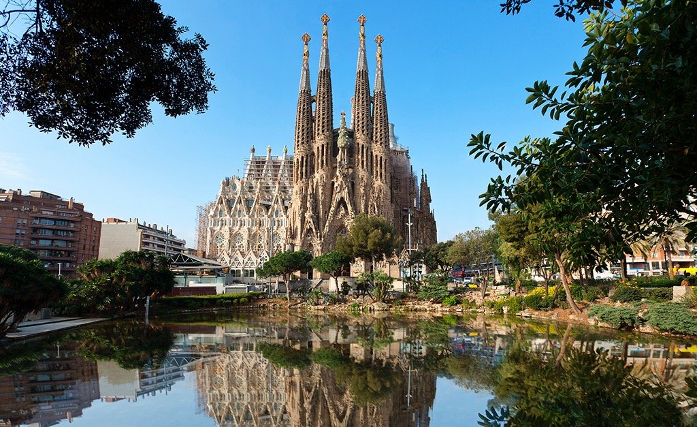
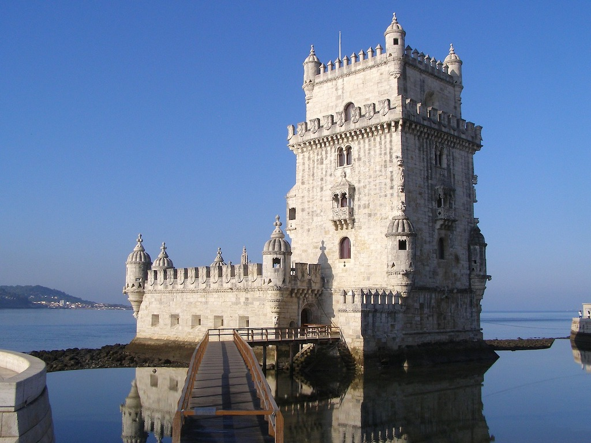

Pontos Turísticos
Não há dúvidas de que a Europa reúne alguns dos pontos turísticos mais incríveis do mundo. Itália, Espanha, Inglaterra, França, Alemanha, Holanda, Portugal e tantos outros países têm os pontos turísticos da Europa mais procurados pelos turistas.
E com tantas opções, fica difícil determinar o que conhecer ao viajar para este continente. Para ajudar você, preparamos uma lista com alguns dos principais pontos turísticos da Europa para que você possa montar o seu roteiro antes de viajar.
Acompanhe a seguir!
Coliseu na Itália

Se você pretende viajar para Itália, não há dúvidas de que o ponto turístico da Europa na Itália mais famoso está lá. Trata-se do Coliseu de Roma, uma construção tão antiga quanto se possa imaginar. Todos os anos, mais de 4 milhões de turistas vão ao Coliseu para ver de perto essa incrível construção.
Ela se iniciou em 72 d.C, e durante muitos anos, serviu como arena para os espectadores assistirem aos gladiadores lutando entre si ou contra animais. Em média, 70 mil romanos assistiam as lutas.
Conhecer o Coliseu é um passeio obrigatório para todo turista que viajar até a Itália, não somente pela grandeza do monumento, mas também pela história incrível.
Torre Eiffel em Paris

Embora pareça um passeio clichê, a Torre Eiffel não poderia ficar de fora da lista de pontos turísticos da Europa mais incríveis que você deve conhecer.
Sua construção não é tão antiga quanto o Coliseu (1889), mas mesmo assim, é um monumento incrível. Ela tem pouco mais de 325 metros de altura e possui mais de 1600 degraus. Sim, você pode subir pela torre de escada, mas recomendamos que pegue o elevador.
Ao subir na Torre Eiffel, você poderá ter uma vista incrível da cidade sob diversos pontos. Independentemente da época em que você vá para lá, é praticamente obrigatório conhecer a Torre Eiffel. Além de proporcionar uma vista maravilhosa da Cidade Luz, existem vários restaurantes que ficam dentro da própria torre para você curtir um clima romântico que Paris proporciona.
Sagrada Família de Barcelona

Partindo agora para a Espanha, um dos principais pontos turísticos do país é a Sagrada Família, construída por Antoni Gaudi. Trata-se de uma igreja com uma grandeza incomparável. São tantos detalhes na construção que é impossível não ficar admirando o projeto. Inclusive, saiba que a construção nunca foi terminada, mas nem por isso o passeio deixa de valer a pena, muito pelo contrário.
Mesmo com a obra inacabada, saiba que é possível conhecer o interior da igreja. O passeio por lá sem dúvida será o ponto alto ao conhecer a Espanha. Vale muito a pena colocar no seu roteiro!
Big Ben de Londres

Este é mais um dos pontos turísticos da Europa que você não pode perder de jeito nenhum.
Aliás, o Big Ben é um dos principais símbolos da Europa. Além de ser uma parada obrigatória para todos os turistas, é lá que fica localizado o parlamento inglês.
O mais legal é que dá para conhecer algumas partes do parlamento de graça, mas para isso, é necessário ir até o Big Ben para conferir a disponibilidade de passeios no dia (ele não abre todos os dias para turismo).
Outra dica: caso você queira visitar o relógio mais famoso do mundo durante o verão, sugerimos que você faça um passeio guiado por dentro do Big Ben para conhecer mais a fundo a sua história e importância deste relógio para Inglaterra. Sem dúvidas, o Big Ben é considerado o ponto turístico mais importante de todo o Reino Unido.
Torre de Belém em Lisboa

Continuando nosso passeio pelos principais pontos turísticos da Europa, um local que você não pode deixar de conhecer é a Torre de Belém, um dos cartões postais mais famosos de Lisboa, a capital de Portugal. Ela foi construída séculos atrás, durante a Era do Ouro em Portugal, época de navegação e descobertas. O objetivo da Torre de Belém ao ser construída era proteger a cidade dos invasores, pois alguns soldados ficavam a postos observando a região para garantir que Lisboa não seria invadida.
Ao longo dos anos, a Torre de Belém foi sendo utilizada para diversas funções, como prisão, ponto de telégrafo e até mesmo um farol para orientar os navios. Foi no ano de 1983 que a Torre de Belém ganhou o título de Patrimônio da Humanidade pela Unesco, sendo hoje um dos principais pontos turísticos da Europa e o principal ponto turístico de Lisboa.